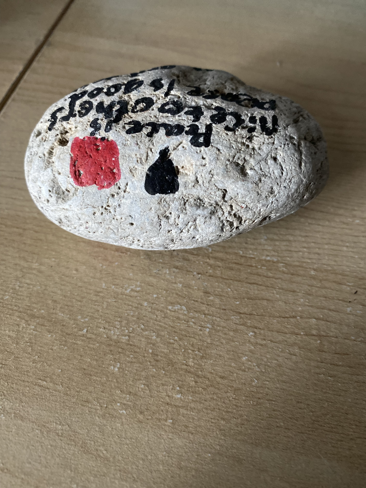
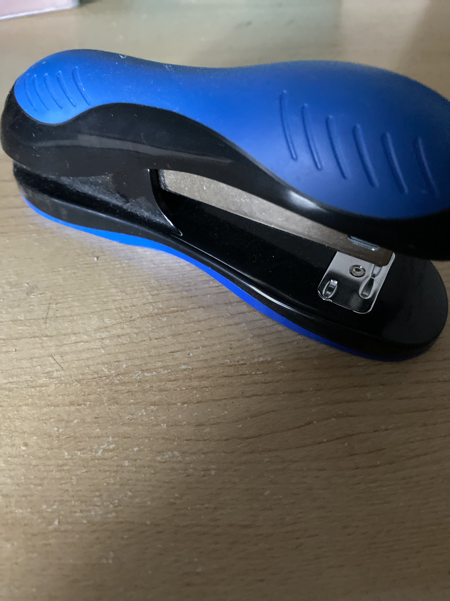

Output On Mobilenet Model -
Ballpoint, Ballpoint pen, Ballpen, Biro
Results
Mobilenet is closer
Test Image - 
Output On Microsoft Azure -
a piece of cake sitting on top of a wooden table
Output On Mobilenet Model -
bagel, beigel
Results
Tie
Test Image -
Output On Microsoft Azure -
a close up of a bottle
Output On Mobilenet Model -
hair spray
Results
Tie
Test Image - 
Output On Microsoft Azure -
a blue toothbrush
Output On Mobilenet Model -
mouse, computer mouse
Results
Tie
I have tested 5 items. Mobilenet has predicted 2 more accurately.
The other 3 items weren't identified by neither one.
So according to my case study Moblenet is more accurate than Microsoft Azure.